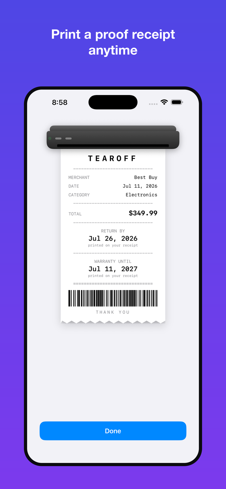

What Tearoff does
Every purchase has a clock on it — a return window that closes, a warranty that expires. Tearoff tracks both and reminds you before they run out, so you never eat the cost of a missed return or a lapsed warranty again.
Scan or add a receipt
Point the camera at a paper receipt, or log a purchase by hand in seconds.
See where each date comes from
Printed on the receipt, a store policy, or an estimate — always labelled, never guessed silently.
A reminder before it closes
Plus a Home Screen widget that keeps the next deadline in view.
Print a proof receipt
A clean thermal-style slip with the deadline and a scannable barcode, ready to share.

Free and Pro
Tearoff is free to use, and stays useful without paying: log purchases by hand, keep your whole vault, and get reminded before a return window closes. Your first three receipt scans are free too, so you can see the scanning work before you decide anything.
- Unlimited purchases, logged by hand
- Three receipt scans to try
- Return-deadline tracking and reminders
- Your full receipt vault, and printed proof slips
- Unlimited camera scanning, all on your device
- Warranty tracking and warranty alerts
- One tap straight to the retailer's own returns page
- Home Screen widgets, with snooze
- A nudge when you're near a store where something is still returnable
- Export your vault as CSV, plus a Year in Review PDF
$2.99/month · $14.99/year · $39.99 once, for good.
Support
Something not working, or have a question about Tearoff? Open an issue and we'll get back to you.
Open an issue on GitHub →Frequently asked
Does Tearoff need an account? No. There's no sign-up — your vault lives on your device.
Where is my data stored? On your device, and in your own private iCloud account if you're signed in, so it syncs across your devices. See the privacy policy for details.
What's included for free? Manual receipt entry, return-deadline reminders, your full receipt vault, and three receipt scans to try. Unlimited scanning, warranty tracking, widgets, proximity reminders, and export are part of Tearoff Pro.
Does Tearoff track my location? Only if you turn on proximity reminders, a Pro feature. Your location is checked while the app is open, used on your device to nudge you when you're near a store with an open return window, and never stored or sent anywhere. See the privacy policy.